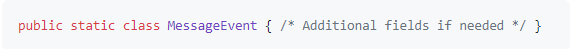
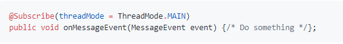
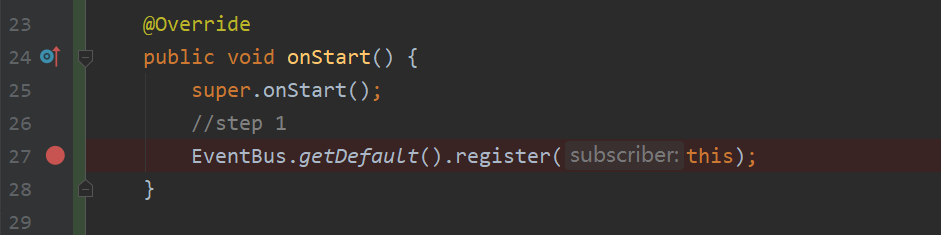
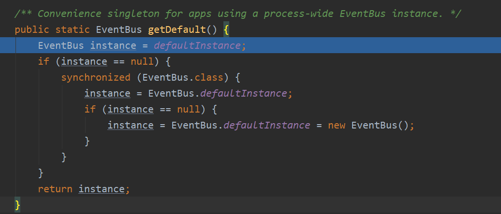
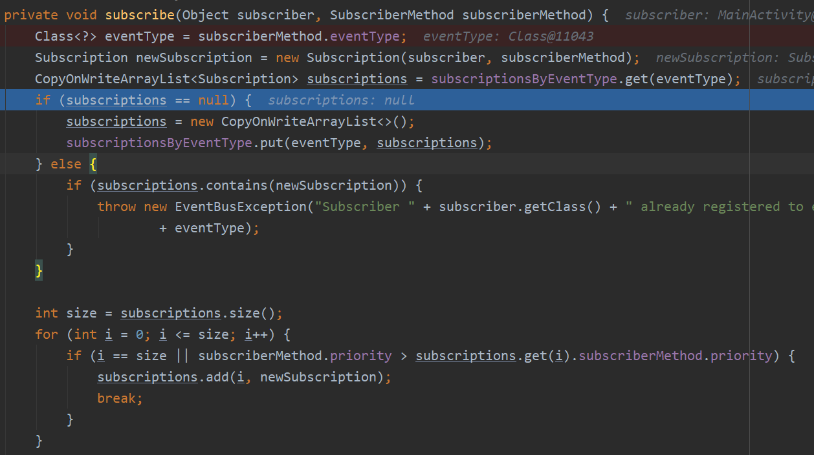

EventBus源码分析
1、EventBus是什么？
EventBus是适用于Android和Java的发布/订阅事件总线。使用EventBus可以快速方便的实现观察者模式。
- 它简化了组件间的通信。
- 事件的发送者和接受者完全解耦。
- 避免了复杂的生命周期问题。
2、EventBus怎么用
分析源码之前，我们先熟悉一下EventBus的用法。 点我打开官网。 首先看到下图：

Publisher(发布者)把Event(事件)post(发送)给EventBus, EventBus把Event传递给Subscriber(订阅者)的 onEvent方法。我们先有一个大概印象，到下面源码分析部分，再回过头来理解这张图。
继续往下看，EventBus的使用分为三步：
- 1.定义事件: 
- 2.注册订阅者和订阅方法
- 3.发送事件


3、EventBus源码分析
我们该从哪里开始分析源码呢？试着从我们最熟悉最常用的代码开始，从EventBus的使用步骤开始。第一步，定义Event很简单。我们进入到第二步：

在图上位置打上断点，进入debug模式一步步查看代码是如何运行的。最先进入的是getDefault()方法

该方法采用单例模式，synchronized关键字保证了线程安全。另外 defaultInstance变量使用volatile关键字修饰。 volatile修饰的变量对它的修改会立刻刷新到主存，比synchronized和Lock开销小。感兴趣的小伙伴请查阅其他资料。
getDefault()返回EventBus实例，继续debug进入register()

register方法接收一个订阅者，在本次调试中就是一个MainActivity的实例。 register方法内部通过subscriberMethodFinder类的对象找到订阅者所有的订阅方法， 就是使用Subscrib注解修饰的方法。
继续往下看，源码里遍历调用subscribe方法，我们debug进入该方法：
该方法接受两个参数，第一个参数是订阅者， 第二个参数是SubscriberMethod类的对象，SubscriberMethod表示订阅者内部的订阅方法。 把两个参数封装为一个Subscription类的对象。